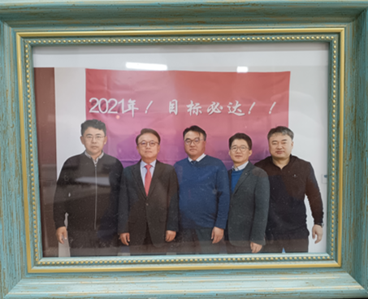
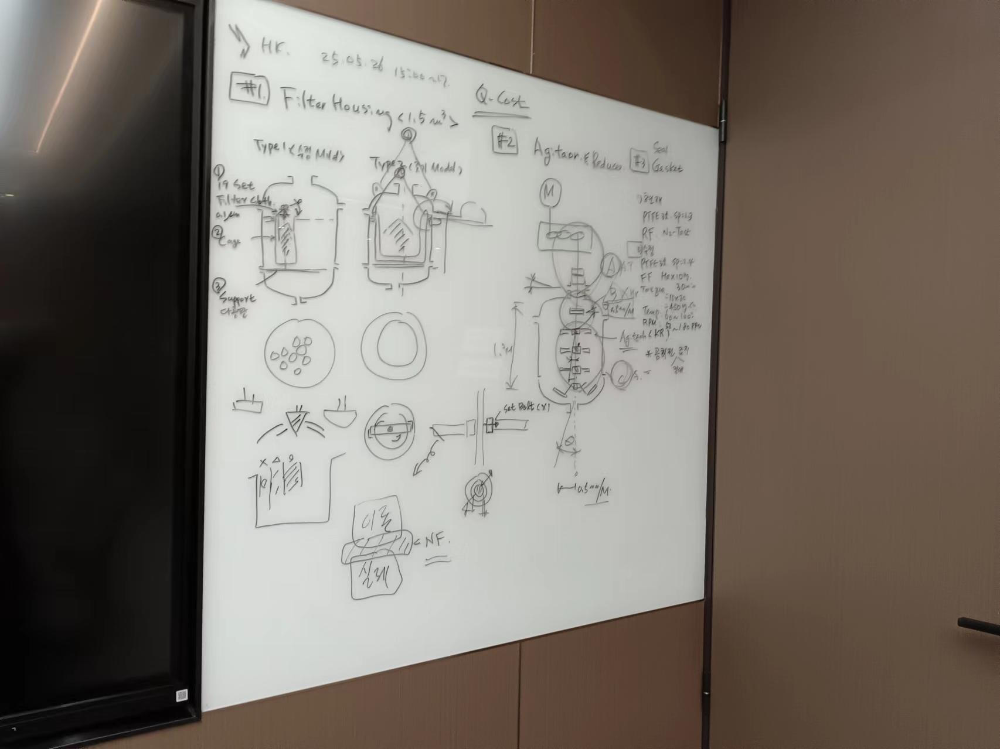
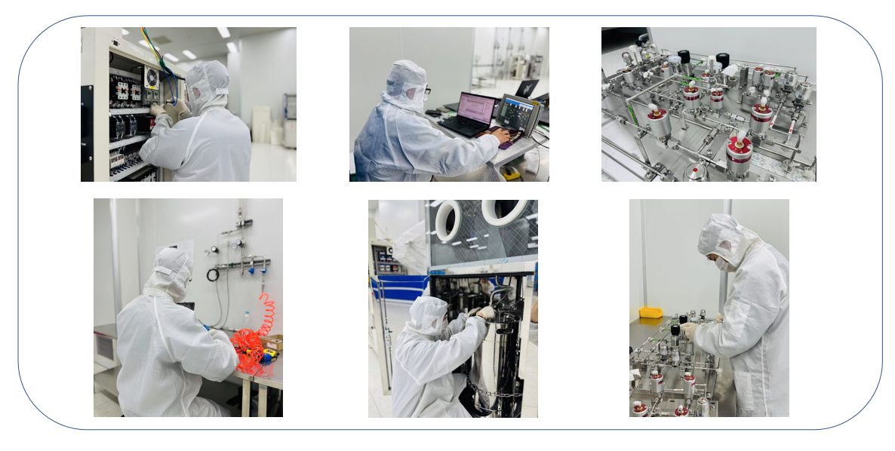
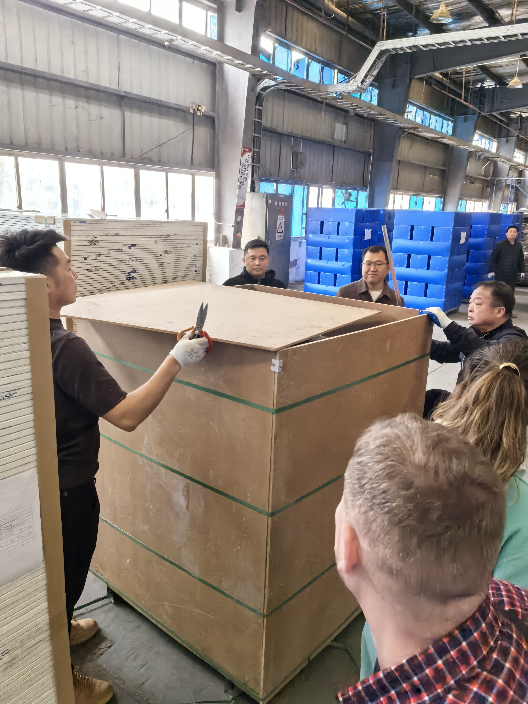
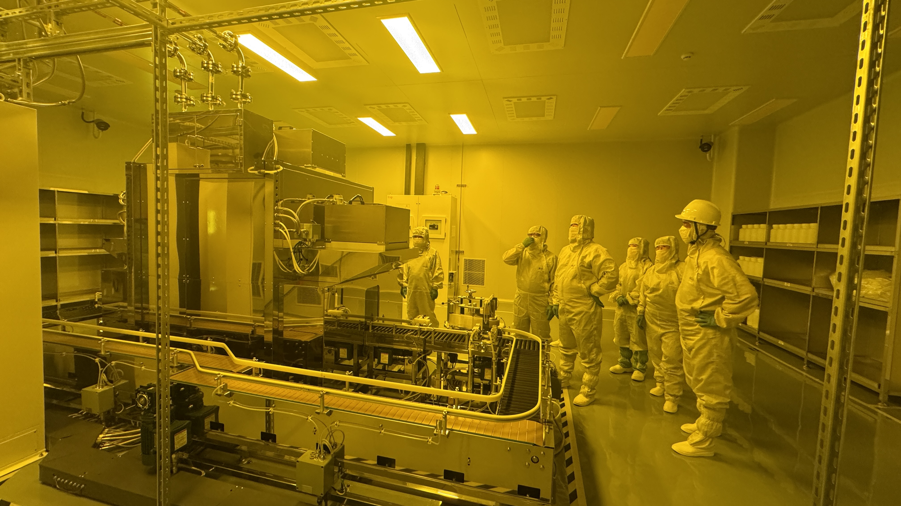

公司介绍

鑫华夏建设由金太周先生创立。公司早期发展阶段，得到了成道建设的悉心指引，这段宝贵的合作经历，为鑫华夏后续的壮大注入了关键的动力与经验。
鑫华夏建设严格遵循国际标准，融合韩国先进技术与本土创新，在半导体设备制造领域以高精度、高稳定性的产品著称，满足集成电路等行业的严苛需求。业务涵盖技术服务、技术开发、咨询与推广，以及工业工程设计服务，致力于为客户提供全生命周期解决方案。集团已取得ISO9001、ISO14001及ISO45001等国际认证，在质量、环保与职业健康安全领域管理优异。 多年来鑫华夏建设积累了精密化学和半导体领域丰富的工程经验，面对精密化学对环境控制的严苛要求以及半导体生产对洁净度、恒温恒湿、超纯水等极端条件的极致需求，能提供从工艺布局优化、专用设备供给、关键系统集成，直至厂房竣工交付的全流程系统解决方案。
主营业务与核心能力

方案设计
鑫华夏拥有经验丰富的工程设计团队，在方案设计方面始终坚持严谨务实的工作作风，每个方案都经过多轮技术论证，确保设计合理可行。团队熟练掌握BIM等现代设计工具，严格执行国家规范标准，特别注重施工可行性和成本控制，能够妥善处理各类复杂工况下的技术难题。凭借多年大型工程项目设计经验，我们形成了专业高效的设计流程，重视各专业协同配合，所完成的设计方案均获得业主和施工方认可，实施效果良好。我们将继续以专业负责的态度，为客户提供优质的工程设计服务。

装备制造
在工程装备制造领域，鑫华夏已建立起完整的自主化装备研发制造体系。针对半导体制造所需的超高洁净度（Class 10-100）、纳米级温控精度（±0.1℃）以及18MΩ·cm超纯水系统等严苛要求，鑫华夏自主研发的专用装备已通过多项国际认证，关键性能指标达到行业领先水平。

建设安装
鑫华夏在工程建造和设备安装领域具备扎实的专业能力：我们拥有洁净室建造的成熟经验，能够实现温度±1℃、湿度±5%的稳定控制；采用模块化施工方法，有效提升工程效率；在设备安装方面，通过规范化的作业流程和专业团队，确保关键设备安装定位精度达到0.1mm以内。公司已参与完成多个半导体和精密化工项目，包括晶圆厂洁净车间、特种气体系统等工程，积累了宝贵的项目实施经验。我们坚持质量第一的原则，以专业的技术能力和负责任的态度，为客户提供可靠的工程服务。

品质把控
鑫华夏建立了完善的供应商评估体系，对所有采购资材实施入库检验、过程抽检和最终验收三重把关，确保每一批材料都符合工程标准。无论是在零下二十度的俄罗斯，还是在高温高湿的印度中南部，凭借着严格的材料管控和规范的工程管理体系，我们持续为客户交付质量过硬的工程项目。

验收试产
鑫华夏能为客户提供专业的验收试产服务，严格把控从设备调试、工艺验证到小批量试产的每个环节。组建经验丰富的工程团队提供技术支持，确保项目具备正式投产条件。
鑫华夏交付的不仅是工程，而是一套完整可靠的生产解决方案!